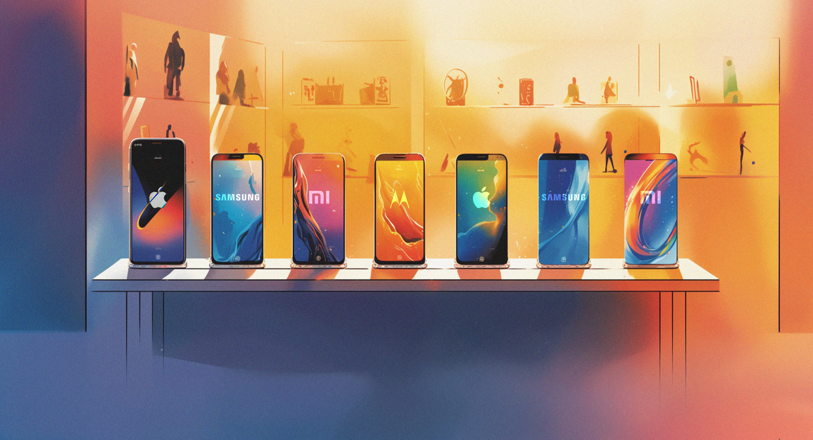

Movies 2023
Опис фільму: Мавка. Лісова пісня
Безмежні українські ліси з давніх-давен приховують безліч таємниць і загадок. Тут, серед столітніх дерев, живуть незвичайні міфічні істоти, а серед них — Мавка, Душа і новообрана Берегиня Лісу. Її головне покликання — захищати Ліс та його головний скарб — Джерело життя — від будь-яких зазіхань людей. Лукаш — звичайний сільський хлопець з рідкісним музикальним талантом, який він повністю вкладає у гру на сопілці. Лукаш мріє все своє життя присвятити музиці. Саме завдяки їй і відбувається неймовірне: Мавка і Лукаш зустрічаються і закохуються одне в одного. Та разом з тим Мавка опиняється перед складним вибором: кохання чи її обов’язок перед Лісом.
Опис фільму: Довбуш
Карпати на початку XVIII століття. Жорстоке правління польської шляхти змушує гуцулів тікати в гори. Двоє братів, Олекса та Іван Довбуші, опиняються поза законом і стають опришками. У пошуках помсти панам за вбивство батьків Довбушів, брати стають ворогами один одному. Один прагне грошей, другий – справедливості. Гуцули починають повстання, яке очолює Олекса. Шляхта робить усе можливе, аби знищити Довбуша. Але він їх перехитрив. І розрослася легенда про карпатського лицаря. Легенда, що надихає покоління тих, хто бореться за свободу рідної землі. Про силу і любов Олекси Довбуша, про зраду і кривду. Про те, як він жив і як обманув смерть.
Опис фільму:Людина-Павук: Крізь Всесвіт
Майлз Моралес повертається у новій главі епічної анімаційної пригоди! Цього разу на підлітка з Нью-Йорку чекає несподівана подорож крізь Всесвіт, в якій він об’єднає зусилля з Ґвен Стейсі та новою командою «Павуків», щоб протистояти наймогутнішому лиходію, якого вони коли-небудь зустрічали.
Music 2023

ТНМК - Доми (feat. Ельвіра Сарихаліл)
- Виконавець: ТНМК
- Жанр: #Українська
- Бітрейт: 320 Kbps
- Тривалість: 03:00
- Розмір: 6.89 MB
- Завантажень: 271
- Додано: 11.09.2023 в 00:53
ЗАЛІСКО - Хлопці будем жити
- Виконавець: ЗАЛІСКО
- Жанр: #Українська
- Бітрейт: 320 Kbps
- Тривалість: 03:25
- Розмір: 7.82 MB
- Завантажень: 692
- Додано: 10.09.2023 в 19:17
Kalush Orchestra & Szpaku - Nasze Domy
- Виконавець: Kalush Orchestra, Szpaku
- Жанр: #Українська
- Бітрейт: 320 Kbps
- Тривалість: 02:44
- Розмір: 6.3 MB
- Завантажень: 105
- Додано: 09.09.2023 в 01:18
NEWS 2023
Скільки коштували кораблі які втратила рф (країна гній)
- ракетний крейсер «Москва» вартістю $750 млн
- великий десантний корабель «Саратов» за $75 млн.
- судно «Василь Бех» – $21 млн;
«Новий iPhone – це половина «Мавіка»
Українські ритейлери готуються до сплеску продажів iPhone 15. Коли вони почнуться і які будуть ціни
У2023-му попит на преміальні смартфони в Україні повернеться на довоєнні показники, впевнені українські ритейлери. «Яблучна» техніка робила касу продавцям гаджетів, особливо після осінніх презентацій нових моделей. Коли очікувати старт продажів та які будуть ціни на iPhone 15?
«Не забувайте, що новий iPhone – це половина «Мавіка», – пише заступник голови Мінсоцполітики Костянтин Кошеленко у своєму Facebook про новий iPhone 15. Велика війна змінила пріоритети українців, але, схоже, на продукцію Apple цей тренд більше не поширюється.
«Багато людей пристосувалися до нових умов, пов’язаних з війною, та повернулися до звичних умов споживання», – каже CEO «Цитрусу» Вадим Лисюк. Динаміка попиту на преміальні смартфони порівняно з 2022 роком збільшилася на 12%, каже менеджер відділу «Смартфони, аксесуари та аудіо» мережі «Алло» Євген Валєр. За неповний 2023 рік мережа продала майже стільки ж iPhone, що й роком раніше. Звідки у ритейлерів такий оптимізм?
Скільки може коштувати iPhone 15 в Україні
Новий смартфон Apple має не надто багато відмінностей від iPhone 14. Головна модифікація – зарядний порт європейського зразка. На відміну від попередників з Lightning, iPhone 15 має USB Type-C. Причина змін – відповідний закон Європарламенту, що зобов’язує виробників техніки перейти на єдиний тип зарядних пристроїв із 2024-го.
Ціни на iPhone 15 в США майже не змінилися – від $799 та від $899 на iPhone 15 Plus. Нові iPhone Pro та Pro Max коштуватимуть від $999. Офіційних цін для України поки що немає. «Очікуємо їх на рівні або дещо дорожче, ніж поточна лінійка iPhone 14», – каже керівник напряму «Електроніка» Rozetka Олександр Гайворонський.
За iPhone 15 в Україні доведеться заплатити від 45 000 грн за стандартну модель до 68 000 грн за iPhone 15 Pro Max, прогнозує маркетинг-директор «Фокстроту» Олег Нікольський.
Передзамовлення у США відкривається 15 вересня, продажі – з 22 вересня. «Можемо спрогнозувати старт продажів в Україні приблизно на третій-четвертий тиждень після презентації», – спирається на досвід попередніх років Нікольський. «Яблучні» новинки вже є на сайтах великих мереж електроніки з приміткою «скоро у продажу». Однак оформити замовлення все ще не можна – максимум підписатися на сповіщення про старт продажів.
Менші гравці оперативніші й охочіше озвучують ціни. Наприклад, мережа Yabluka пропонує новий iPhone 15 на 128 GB майже за 43 000 грн, Estore – за 40 000 грн. В Icoola.ua наразі для передзамовлення доступний лише iPhone 15 Pro вартістю до 81 000 грн.
Скільки коштуватимуть iPhone 15 в Україні: прогноз «Фокстроту»
- iPhone 15 – 44 999–46 999 грн.
- iPhone 15 Plus – 49 999–52 999 грн.
- iPhone 15 Pro – 56 999–58 999 грн.
- iPhone Pro Max – 65 999–67 999 грн.
Чому ритейлери чекають сплеску попиту на преміальні смартфони
Попит на продукцію Apple у Rozetka досить стабільний, каже Гайворонський. Щороку Rozetka продає понад 10 000 iPhone. Для порівняння: продажі «Цитрусу» в рази більше – 116 000 штук із початку з 2021-го і до серпня 2023-го.
Однак у першій п’ятірці продажів маркетплейсу Владислава та Ірини Чечоткіних демократичні моделі Xiaomi, Samsung та Motorola на Android. У 2021-му та 2022-му перше місце тримав Xiaomi Redmi 9A вартістю до 4000 грн.
Влітку 2023-го серед лідерів – гаджети цінового сегмента 5000–10 000 грн та бюджетні моделі до 5000 грн, каже Валєр з «Алло». Техніка Apple – на п’ятому місці.
Інтерес до преміальних смартфонів в Україні очікувано впав на початку великої війни. «Але десь за пів року ситуація трохи стабілізувалася, а за рік попит досяг рівня 2021 року», – каже Лисюк.
Схожа статистика в Rozetka – продажі дорогих гаджетів пішли вгору вже на початку 2023-го. З виходом 15-го iPhone частка преміальних смартфонів повернеться на рівень довоєнного 2021 року, вважає Гайворонський. До кінця 2023-го у грошовому вираженні вони займатимуть 35–37% ринку, озвучує Нікольський внутрішню аналітику.
Загалом Apple стає дедалі складніше продавати свою техніку. iPhone – єдиний продукт, чиї продажі зросли у 2023-му на 1,5%, або більш як до $51 млрд, свідчить квартальний звіт компанії. Протягом липня – вересня компанія заробила $94,8 млрд. Це на понад $11 млрд більше, ніж у 2022-му, коли Apple теж вдалося вийти на рекордні доходи завдяки iPhone.
«Після презентації, як завжди, попит різко зростає», – каже Лисюк. Поправити статистику «яблучних» гаджетів він сподівається у високий сезон «чорної п’ятниці» та новорічних свят.
Моя улюблена КРАЇНА
Ми живемо в прекрасному краї — Україні. Він славиться родючими землями з багатими врожаями, чудовою природою. Ми вивчаємо унікальні природні та кліматичні умови нашої країни на уроках природознавства. Високі шпилі Карпат, їх букові ліси, родючі землі центральної України, яскраве сонце кримських курортів, уславлена Україна — це все моя країна.
Але перш за все наша країна відома добрими працьовитими людьми. Що б не відбувалося — завжди українці відстоювали свободу і честь свого краю. У боротьбі з турками, польською шляхтою, німецько-фашистськими загарбниками та російским гноєм вирішальну роль відігравав народ. Люди вважали за честь померти, захищаючи своїх рідних від ворога. Так само народ самовіддано відбудовував свої міста й села.
У всі часи українцям були притаманні такі риси, як доброта, працелюбність, повага до інших людей, тяжіння до краси і духовності. Це є національними рисами нашого народу. Пересвідчитися в цьому я можу на прикладі своєї бабусі, яка живе в селі. Приїжджаючи до неї у гості, розумію, що для мене це найщасливіші дні. Бабуся — добра, лагідна людина, з любов'ю ставиться до мене. Вона часто розповідає мені історії про минуле, вчить поважати природу. Разом із нею ми працюємо на городі чи ходимо в ліс збирати білі гриби.
Я знаю, що головне для кожного з нас — бути вірним своїй Батьківщині, бути її свідомим громадянином. І я намагаюся стати ним, бо прагну бути схожим на своїх батьків і мою улюблену бабусю.